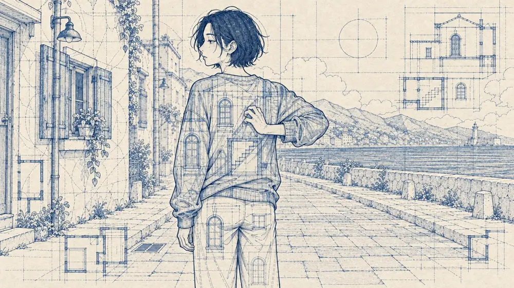

先建立共同的世界
角色、服装、场景和道具作为可复用的视觉依据，连接到后续分镜，让连续镜头共享同一套设定。
映序 FrameWeave / 真实创作案例
一张画布，把角色设定、分镜、动态镜头与声音组织起来。这里既展示创作平台，也展开《寄居蟹》的完整制作过程。
创作工作台 / 无限画布 / 独立 Worker

寄居蟹 · 循环房东实验版 播放完整短片这不是流程示意图。画布保留了这个项目的 241 个节点、652 条连线和原始空间布局。可以拖动、缩放、切换创作阶段，点击节点查看素材，再沿连接继续探索。
在独立窗口打开画布真实项目数据，重新设计的只读展示界面。原始画风参考仅保留节点位置，不分发参考图片；账号、内部地址、提示词配置及连接凭据不包含在公开版中。
角色、服装、场景和道具作为可复用的视觉依据，连接到后续分镜，让连续镜头共享同一套设定。
把分镜首帧、尾帧和视频结果放在一起。既能顺着叙事浏览，也能回溯每个结果依赖的素材。
旁白、对白、配乐和环境声保留各自节点，再接入合成版本；风格实验与完整成片也在同一画布中。
作品放映
循环房东实验版
英文配音 · 中英字幕
一场关于住所、房东和“拥有自己的房子”的怪诞循环。沿着画布回看，从视觉设定到声音合成，每一段创作都有迹可循。
回到制作画布真实截图记录平台已经实现的功能；重新设计的演示界面探索信息层级与操作布局。两者分别标注，让功能事实与设计提案都清楚可见。


示例构图 · 不使用私人素材
演示交互，不调用生成服务。
重设计提案：以黑白层级、连续工作区和更清晰的参数分组，延续作品集的视觉语言。此处不是生产平台截图。
浏览器承载创作界面，FastAPI 管理身份、任务与媒体，Worker 对接独立执行端。数据库保存状态，文件存储保留素材与结果。

将提交、追踪、整理和编排连接起来，让一次生成成为可继续使用的创作素材。
选择预设、配置参数，提交图片或视频任务。
查看执行过程，区分运行、完成与结果待核实的任务。
按账号权限访问素材，保存生成结果与相关信息。
组织创作节点与素材，将想法延伸为后续步骤。
围绕任务执行、异常状态与部署配置，把单个功能组织为可持续迭代的系统。
前端负责交互，API 管理状态，Worker 承担计算与模型调用。按执行能力配置本地或云端资源。
网络中断不代表任务没有执行。对于结果不明确的任务，保留状态供核实，避免盲目重复生成。
以独立配置、数据库与素材存储建立平台实例。公开源代码不携带生产环境的密钥、账号或真实作品。
本页提供只读工作流浏览与作品播放，不提供在线生成服务，也不调用真实生成额度。
工作台基于 ViewComfy 扩展，保留 AGPL-3.0 许可证与上游归属。画布基于 Infinite Canvas 扩展，保留其 MIT 许可证与来源说明。
图片、视频和语音能力需要部署者自行配置模型、执行端和适用的服务账号。
回到作品目录，了解开发协作与表达工具。